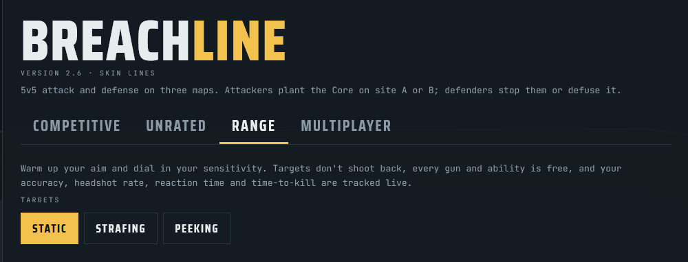

Breachline je taktična prvoosebna strelska igra, ki se igra kar v brskalniku. Dve ekipi po pet igralcev se borita na treh mapah: napadalci poskušajo postaviti napravo, branilci pa jim to preprečiti.
Igra ponuja deset agentov z različnimi sposobnostmi, kot so dimne bombe, bliskavice in teleportacija, ter rangirano tekmovalno igranje od ranga Copper do Apex.
V igri so tri mape: Foundry je betonsko železniško skladišče s tremi potmi, Dunelock so sončne puščavske ruševine templja, Frostgate pa zasnežena trdnjava z ozkimi prehodi.
Igra podpira tudi igranje s prijatelji v skupinah, preoblečenje orožja (skini) in nože z različnimi oblikami.

Igro lahko preizkusiš tukaj: Igraj Breachline